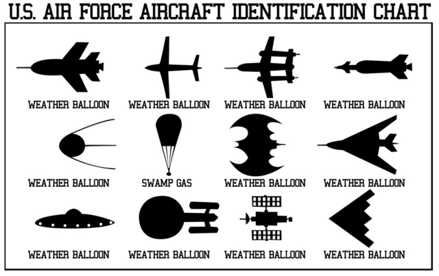

Le ballon à hélium "Dora l'exploratrice" signalé au-dessus de Nancy le 23 octobre 2005 19/20, France 3, 26 octobre 2005 Exemples de méprises avec des ballons festifs
Ces ballons gonflés à l'helium (des jouets de type fête foraine), peuvent donner lieu à des méprises (par exemple)
Yturria, Santiago: "The
Mysterious Flying Humanoids", Rense, 3 juillet 2005.
Dirigeables
Une mystérieuse soucoupe au-dessus de New York le .
La video sera d'abord postée coupée, avant que l'auteur ne zoome sur ce qui était...
un dirigeable Sanyo
Exemples de méprises avec des dirigeables
Filmé au-dessus de Marseille le 1992-10-11
Filmé au-dessus de New York le
Jeux olympiques de Londres le (Goodyear)
Les dirigeables (blimps), parfois source de méprises de par leur forme lenticulaire vus de profil Voire carrément
lenticulaires, généralement vus de loin illuminés la nuit ou éclairés par le soleil au crépuscule.
Ils furent l'objet de spéculation pour expliquer les vagues d'observation d'airships à la fin du 19ème et au début du 20ème
siècle.
En que le Service d'Aéronomie du CNRS lance depuis Trappes
(Yvelines) le 1er ballon stratosphérique français. A partir , le CNES met en œuvre un programme d'aérostat et la Division Ballons du
CST "Généralités", Serveur de la Division Ballons du
CNES va lancer en 40 ans depuis la France comme l'étranger près de 3000 ballons de grande taille (30
à 80 m de diamètre), pouvant évoluer jusqu'à 40 km d'altitude et couvrir des distances très importantes avant de
redescendre. La France devient ainsi le 2ᵉ pays (derrière les USA) à maîtriser toutes les techniques ballons de la
conception à leur exploitation.
Ces ballons permettent d'effectuer des expériences dans presque toutes les disciplines scientifiques : Aéronomie,
Aérologie, Astronomie, Astrophysique, Biologie, Géophysique, Météorologie, Planétologie, Technologie spatiale.
Pour des raisons technologiques, on distingue plusieurs types de missions :
De courtes et moyennes durée (entre 1 h et 4 j) avec des expériences en général lourdes et
complexes que l'on souhaite récupérer à la fin de l'expérimentation, pour les refaire voler.
De longue durée (plusieurs semaines ou mois), avec des expériences légères (quelques
kilogrammes ou dizaines de kilogrammes), considérées comme perdues à la fin de l'expérimentation.
Captives : utilisées régulièrement dans le cadre d'essais technologiques à des altitudes de
quelques centaines de m.
Planétaires : dans l'atmosphère des planètes Mars et Vénus. Ces ballons doivent pouvoir
s'accommoder de l'environnement très particulier des planètes, à savoir température élevée, présence d'acide
sulfurique pour Venus et atmosphère très peu dense nécessitant un grand volume pour Mars. De plus ils doivent
supporter le déploiement et le gonflage à l'arrivée dans l'atmosphère de la planète et être contenerisable sous un
faible volume.
A chaque type de mission correspond un type de ballon:
Le Ballon Stratosphérique Ouvert (BSO)
La Montgolfière InfraRouge (MIR)
Le Ballon Pressurisé Stratosphérique (BPS)
Ballons-sondes
Exemples de ballons-sondes avancés pour expliquer des cas d'ovnis
Version sarcastique d'un graphique d'identification d'appareils par l'USAF, stigmatisant le nombre
considérable d'identifications d'ovnis comme "ballons météo"

Lancés par les stations météorologiques sont plus petits (une dizaine de mètres au maximum) et montent moins haut
(habituellement 10 km, parfois 30 km).
Ces ballons sont vus à l'œil sous forme d'une lueur brillante un peu plus grosse qu'une étoile. A l'aide de
jumelles, on distingue bien leur forme caractéristique : triangulaire pointe en bas, ou parfois ovale ou circulaire.
Ils sont particulièrement visibles au coucher ou au lever du Soleil,
qui les éclaire vivement et peut les colorer. Les observations peuvent être longues, de 1/4 h à plusieurs heures.
Leurs déplacements sont lents, sans vives accélérations, sans virages brusques (mais les ballons-sondes, qui planent
à des altitudes plus faibles, peuvent se déplacer nettement plus rapidement que des ballons de recherche). Les vents
de haute altitude peuvent être différents de ceux présents au niveau du sol ou des nuages bas, et poussent donc
parfois le ballon dans une autre direction que celle attendue par le témoin.
Blackmer, Roy H., Jr., "Balloons" in "Radar and the Observation of UFOs", Scientific
Study of Unidentified Flying
Objects, 1969 -- Description des comportements d'échos pouvant être observés au radar à cause de ballons.Printy, Timothy: "Up, Up, and Away In My
Beautiful UFO", octobre 2001